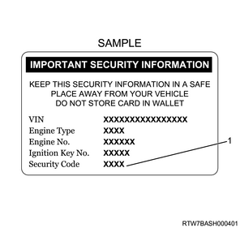
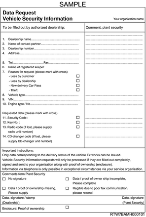
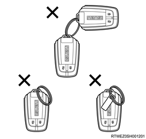

Caution
Vehicle security information card (if issued)
When resetting or programming the PESS control unit, ECM, steering lock assembly, or electronic keys using a scan tool, you will be requested to enter the 4-digit security code. This code is shown on the vehicle security information card issued with new vehicles. If the card is unavailable, the service department of the Isuzu distributor must be contacted in order to obtain the security code.

For new owners, distributors or dealerships must provide a vehicle security information card that shows the identification number of the owner's vehicle immobilizer system. This information is extremely important for repairs or when an electronic key is lost. Dealers are responsible for providing the following three items.
Vehicle security information card for new owners
Blank vehicle security information card for reissuance
Instructions on how to use the card for the dealership
Save all the vehicle security codes as confidential data. If the vehicle security information card is lost, the data must be requested from the service department of the Isuzu distributor. This request will only be processed if accompanied by the specified form and proof of ownership. Once the data is received, it will be entered onto a blank card and given to the customer. Any unused cards should be destroyed. Instructions on filling out the Data Request Vehicle Security Information Card are as follows.
The data requested under items 1 to 10 must be provided in full, including the authorized dealership number, the vehicle identification number (VIN) and engine type/number.
The form must be completed by entering the data and signature/authorized dealership stamp, and then sent along with proof of ownership to the address provided in the form.
After confirming that the information is correct, the requested data should be sent by fax to the dealership that made the request.

Security code
The security code is necessary to reset or program the PESS control unit, ECM, steering lock assembly, and electronic keys. If an incorrect code is entered when the scan tool requests the security code to be entered, the PESS control unit or ECM will go into a security wait status. This wait status will prevent any further attempts to enter the security code until the wait time has elapsed. If an incorrect security code is entered again after the initial wait time has elapsed, the PESS control unit or ECM will go into a second wait status. The wait time will increase each time an incorrect code is entered. If the correct code is entered, the wait time will reset back to its original value of 10 seconds.
Stage 1: 10 seconds
Stage 2: 10 seconds
Stage 3: 10 minutes
Stage 4: 20 minutes
Stage 5: 40 minutes
Stage 6: 80 minutes (1 hour 20 minutes)
Stage 7: 160 minutes (2 hours 40 minutes)
Stage 8: 320 minutes (5 hours 20 minutes)
Stage 9: 640 minutes (10 hours 40 minutes)
Stage 10: 1280 minutes (21 hours 20 minutes)
Caution
Electronic key
Usually, 2 or 3 electronic keys are provided with each new vehicle. Owners requiring additional keys can receive up to a total of 5 electronic keys.
Caution

Erase Electronic-Keys
The [Erase Electronic-Keys] procedure must be performed with a scan tool if the following conditions are met.
The owner has lost an electronic key.
Broken electronic key replacement.
Caution
Program Electronic KEY
The [Electronic KEY Registration] procedure must be performed if any of the following conditions are met.
The diagnostic chart instructs you to replace the electronic keys.
The diagnostic chart instructs you to program the electronic keys.
Reprogramming is necessary as the electronic key information has been erased.
The owner has requested additional electronic keys.
Reset Steering Lock ECU
The [Reset Steering Lock ECU] procedure must be performed if any of the following conditions are met.
If the diagnostic chart instructs you to replace the steering lock assembly, and the steering lock assembly with the registered security code is used.
The steering lock assembly was replaced without using spare parts.
Caution
Reset PESS Control Unit
The [Reset PESS Control Unit] procedure must be performed if any of the following conditions are met.
If the diagnostic chart instructs you to replace the PESS control unit, and the PESS control unit with the registered security code is used.
The PESS control unit was replaced without using spare parts.
Caution
Reset Engine Control Module
The [Reset Engine Control Module] procedure must be performed if any of the following conditions are met.
If the diagnostic chart instructs you to replace the ECM, and if the ECM with the registered security code is used.
The ECM was replaced without using spare parts.
Caution
Program PESS Function
The [Program PESS Function] procedure must be performed if any of the following conditions are met.
The diagnostic chart instructs you to program the PESS control unit.
A new or reused PESS control unit was installed.
The diagnostic chart instructs you to program the steering lock assembly.
A new steering lock assembly has been installed.
The steering lock assembly is a reused part that was reset in the original vehicle.
The diagnostic chart instructs you to program the ECM.
A new ECM is installed.
The ECM is a reused part that was reset in the original vehicle.
A new or reused PESS control unit and steering lock assembly were installed at the same time.
A new or reused PESS control unit and ECM were installed at the same time.
A new or reused steering lock assembly and ECM were installed at the same time.
A new or reused PESS control unit, steering lock assembly, and ECM were installed at the same time.
Erase Electronic KEY
Caution
1. Connect a scan tool to the DLC.
2. Turn ON the ignition switch.
3. Select the Diagnostics.
4. Select the Body.
5. Select the PESS.
6. Select the Additional Function.
7. Select Erase Electronic KEY.
Note
Caution
8. Turn OFF the ignition switch.
Note
Program Electronic KEY
9. Connect a scan tool to the DLC.
10. Press the engine start/stop button.
Note
11. Select the Diagnostics.
12. Select the Body.
13. Select the PESS.
14. Select the Programming.
15. Select Electronic KEY Registration.
Note
Caution
16. Turn OFF the ignition switch.
Note
Reset Steering Lock ECU
Note
1. Connect a scan tool to the DLC.
2. Turn ON the ignition switch.
3. Select the Diagnostics.
4. Select the Body.
5. Select the PESS.
6. Select the Additional Function.
7. Select Reset Steering Lock ECU.
Note
Caution
8. Turn OFF the ignition switch.
Note
Reset Engine Control Module
Note
1. Connect a scan tool to the DLC.
2. Turn ON the ignition switch.
3. Select the Diagnostics.
4. Select the Body.
5. Select the PESS.
6. Select the Additional Function.
7. Select Reset Engine Control Module.
Note
Caution
8. Turn OFF the ignition switch.
Note
Caution
Note
Caution
1. Connect a scan tool to the DLC.
2. Turn ON the ignition switch.
3. Select the Diagnostics.
4. Select the Body.
5. Select the PESS.
6. Select the Programming.
7. Select Download Vehicle Configuration Data.
Note
Initial Controller Setting
8. Connect a scan tool to the DLC.
9. Turn ON the ignition switch.
10. Select the Diagnostics.
11. Select the Body.
12. Select the PESS.
13. Select the Special Function.
14. Select Initial Controller Setting.
Note
| Scan tool parameter | |
| Center LF Antenna Diagnosis | ON |
| Rear LF Antenna Diagnosis | ON |
| Rear LF Auxiliary Antenna Diagnosis | ON |
| Driver Door LF Antenna Diagnosis | ON |
| Assist Door LF Antenna Diagnosis | OFF |
| Tail Gate LF Antenna Diagnosis | ON |
Reset PESS Control Unit
Note
1. Connect a scan tool to the DLC.
2. Turn ON the ignition switch.
3. Select the Diagnostics.
4. Select the Body.
5. Select the PESS.
6. Select the Additional Function.
7. Select Reset PESS Control Unit.
Note
Caution
8. Turn OFF the ignition switch.
Note
Transmission learning
Note
9. Connect a scan tool to the DLC.
10. Press the engine start/stop button twice.
Note
11. Perform transmission learning.
Note
12. Check the PESS warning light.
Note
Program PESS Function
13. Select the Diagnostics.
14. Select the Body.
15. Select the PESS.
16. Select the Programming.
17. Select Program PESS Function.
Note
Caution
18. Turn OFF the ignition switch.
Note
Initial Controller Setting
19. Connect a scan tool to the DLC.
20. Turn ON the ignition switch.
21. Select the Diagnostics.
22. Select the Body.
23. Select the PESS.
24. Select the Special Function.
25. Select Initial Controller Setting.
Note
| Scan tool parameter | |
| Center LF Antenna Diagnosis | ON |
| Rear LF Antenna Diagnosis | ON |
| Rear LF Auxiliary Antenna Diagnosis | ON |
| Driver Door LF Antenna Diagnosis | ON |
| Assist Door LF Antenna Diagnosis | OFF |
| Tail Gate LF Antenna Diagnosis | ON |
Vehicle Configuration Setting
26. Connect a scan tool to the DLC.
27. Turn ON the ignition switch.
28. Select the Diagnostics.
29. Select the Body.
30. Select the PESS.
31. Select the Special Function.
32. Select Vehicle Configuration Setting.
Note
| Inner Buzzer Volume Setting | The buzzer volume output from the buzzer embedded in the IP cluster can be changed. The volume can be set to the 3 patterns of MAX, MIDDLE, and LOW. The default volume setting is MAX. |
| Outer Buzzer Volume Setting | The buzzer volume output from the external buzzer can be changed. The volume can be set to the 3 patterns of MAX, MIDDLE, and LOW. The default volume setting is MAX. |
| Driver Outside Door Knob Button Function | The lock button on the outside handle that is usually used for locking can be changed to an unlock button. [Unlock with 2 second long press], [Unlock without regard to number of seconds], or [Only lock] can be set. The initial setting is [Unlock with 2 second long press]. |
| Tail Gate Unlock Mode Setting | The operation/non-operation of the answerback can be set for the tail gate along with each door when unlocking. |
| Answer Back Setting | The operation/non-operation of the answerback buzzer when locking and unlocking can be set. The answerback buzzer volume can be changed using "Outer Buzzer Volume setting". |
| ACC Auto Power OFF Timer Setting | The operation/non-operation of the ACC auto power off can be set. |